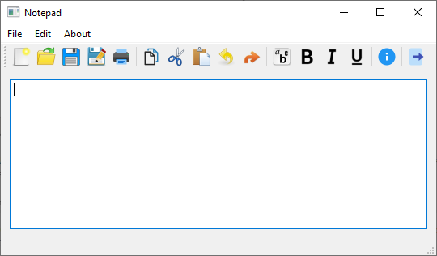

Qt Widgets Tutorials

Qt comes with a large range of standard widgets that users of modern applications have come to expect.
A tutorial for Qt Widgets based notepad application. | |
This tutorial covers basic usage of widgets and layouts, showing how they are used to build GUI applications. |